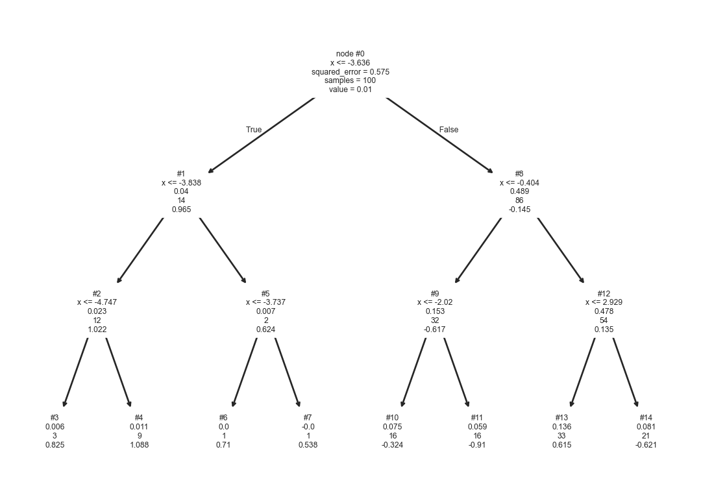
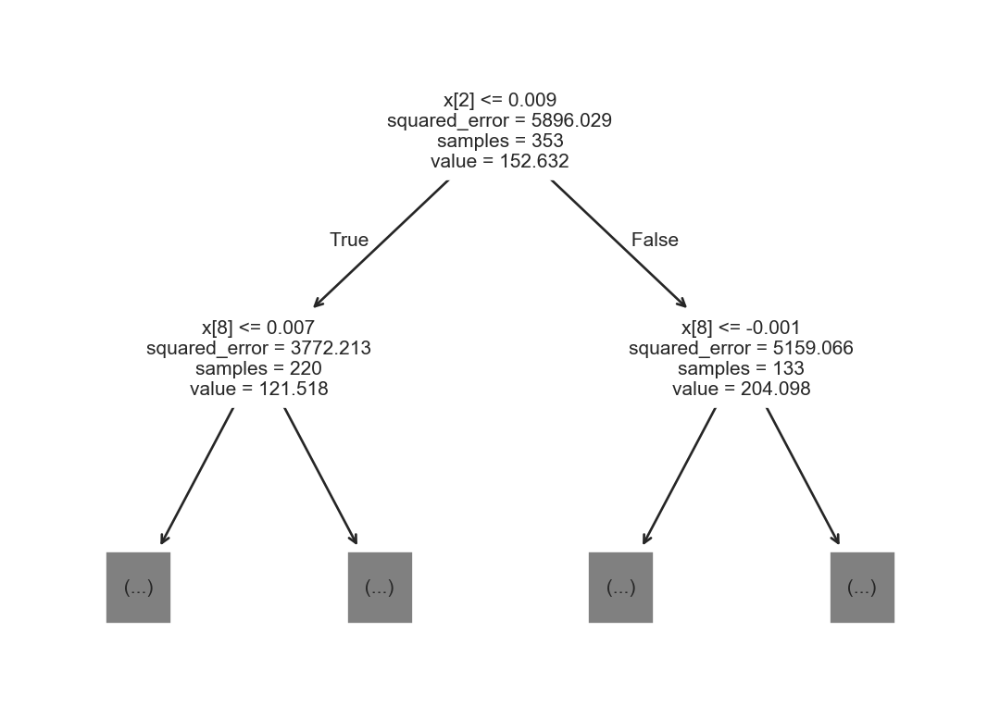

from sklearn import tree
from sklearn.model_selection import train_test_split
from sklearn.datasets import load_breast_cancer, load_diabetes
from sklearn.inspection import DecisionBoundaryDisplay
from scipy.stats import multivariate_normal
from matplotlib import pylab as plt
import numpy as np
import pandas as pd
import seaborn as sns8 Árboles de Decisión
El objetivo de la unidad es conocer y aplicar árboles de decisión a problemas de clasificación y regresión.
8.1 Paquetes usados
8.2 Introducción
Los árboles de decisión son una estructura de datos jerárquica, la cual se construye utilizando una estrategia de divide y vencerás. Los árboles son un método no paramétrico diseñado para problemas de regresión y clasificación.
El árbol se camina desde la raíz hacia las hojas; en cada nodo se tiene una regla que muestra el camino de acuerdo a la entrada y la hoja indica la clase o respuesta que corresponde a la entrada.
8.3 Clasificación
Utilizando el procedimiento para generar tres Distribuciones Gausianas (Sección 2.3.1) se generan las siguientes poblaciones (Figura 8.1) con medias \(\mu_1=[5, 5]^\intercal\), \(\mu_2=[-5, -10]^\intercal\) y \(\mu_3=[15, -6]^\intercal\); utilizando las matrices de covarianza originales.
Código
seed = 1
X_1 = multivariate_normal(mean=[5, 5],
seed=seed,
cov=[[4, 0], [0, 2]]).rvs(1000)
X_2 = multivariate_normal(mean=[-5, -10],
seed=seed,
cov=[[2, 1], [1, 3]]).rvs(1000)
X_3 = multivariate_normal(mean=[15, -6],
seed=seed,
cov=[[2, 3], [3, 7]]).rvs(1000)
df = pd.DataFrame([dict(x=x, y=y, clase=1) for x, y in X_1] + \
[dict(x=x, y=y, clase=2) for x, y in X_2] + \
[dict(x=x, y=y, clase=3) for x, y in X_3])
sns.relplot(data=df, kind='scatter',
x='x', y='y', hue='clase')Con estas tres poblaciones, donde cada distribución genera una clase se crea un árbol de decisión. El árbol se muestra en la Figura 8.2, donde se observa, en cada nodo interno, la siguiente información. La primera línea muestra el identificador del nodo, la segunda corresponde a la función de corte, la tercera línea es la entropía (\(H(\mathcal Y) = -\sum_{y \in \mathcal Y} \mathbb P(\mathcal Y=y) \log_2 \mathbb P(\mathcal Y=y)\)), la cuarta es el número de elementos que llegaron al nodo y la última la frecuencia de cada clase en ese nodo.
Código
X = np.concatenate((X_1, X_2, X_3), axis=0)
y = np.array([1] * 1000 + [2] * 1000 + [3] * 1000)
arbol = tree.DecisionTreeClassifier(criterion='entropy').fit(X, y)
_ = tree.plot_tree(arbol, node_ids=True,
feature_names=['x', 'y'], label='root')Por ejemplo el nodo raíz del árbol tiene una entropía de \(1.5850\), la función de decisión es \(x \leq 10.5605\) que indica que todos los elementos con un valor en \(x\) menor o igual del valor calculado están del lado izquierdo. Los hojas (nodos #2, #3, #5, y #6) no cuentan con una función de corte, dado que son la parte final del árbol. En el árbol mostrado se observa que la entropía en todos los casos es \(0\), lo cual indica que todos los elementos que llegaron a ese nodo son de la misma clase. No en todos los casos las hojas tienen entropía cero y existen parámetros en la creación del árbol que permiten crear árboles más simples. Por ejemplo, hay hojas que tienen muy pocos ejemplos, uno se podría preguntar ¿qué pasaría si esas hojas se eliminan? para tener un árbol más simple.
La siguiente Figura 8.3 muestra el árbol generado cuando se remueven el nodo #6. Se observa un árbol con menos nodos, aunque la entropía en es diferente de cero en algunas hojas. La segunda parte de la figura muestra la función de decisión que genera el árbol de decisión. Se observa que cada regla divide el espacio en dos usando la información que se muestra en cada nodo.
Código
ax = plt.subplot(2, 1, 1)
arbol = tree.DecisionTreeClassifier(criterion='entropy', min_samples_split=1003).fit(X, y)
_ = tree.plot_tree(arbol, node_ids=True,
feature_names=['x', 'y'], label='root')
ax = plt.subplot(2, 1, 2)
DecisionBoundaryDisplay.from_estimator(arbol, X, cmap=plt.cm.RdYlBu,
response_method='predict',
ax=ax, xlabel='x', ylabel='y')
for i, color in enumerate('ryb'):
mask = y == (i + 1)
plt.scatter(X[mask, 0], X[mask, 1], c=color,
label=f'{i+1}', cmap=plt.cm.RdYlBu, edgecolor='black')8.3.1 Predicción
Utilizando el árbol y la función de decisión mostrada en Figura 8.3, se puede explicar el proceso de clasificar un nuevo elemento. Por ejemplo, el elemento \(\mathbf u=(x=-3, y=0.5)\) pasaría por los nodos #0, #1 y #3 para llegar a la clase correspondiente.
8.3.2 Entrenamiento
Existen diferentes sistemas para la generación de un árbol de decisión (e.g., Quinlan (1986)) la mayoría de ellos comparten las siguiente estructura general. La construcción un árbol se realiza mediante un procedimiento recursivo en donde se aplica la función de corte \(f_m(\mathbf x) = x_i \leq a\) en el nodo \(m\), donde el parámetro \(a\) y la componente \(x_i\) se identifican utilizando los datos que llegan al nodo \(m\) de tal manera que se maximice una función de costo.
Una función de costo podría estar basada en la entropía, es decir, para cada posible corte se mide la entropía en los nodos generados y se calcula la esperanza de la entropía de la siguiente manera.
\[ L(x_i, a) = \sum_h \frac{\mid \mathcal D_h \mid}{\mid \mathcal D_m \mid} H(\mathcal D_h), \]
donde \(H(\mathcal D_h)\) es la entropía de las etiquetas del conjunto \(\mathcal D_h\), la entropía se puede calcular con la siguiente función. La función recibe un arreglo con las clases, está protegida para calcular \(0 \log 0 = 0\) y finalmente regresa la entropía de arr.
def H(arr):
a, b = np.unique(arr, return_counts=True)
b = b / b.sum()
return - (b * np.log2(b, where=b != 0)).sum()La función que optimiza \(L(x_i, a),\) para encontrar \(a\) se implementa en el procedimiento corte_var. Este procedimiento asume que las etiquetas (labels) están ordenadas por la variable \(x_i\), es decir la primera etiqueta corresponde al valor mínimo de \(x_i\) y la última al valor máximo. Considerando esto, el valor de \(a\) es el índice con el menor costo. En la primera línea se inicializa la variable mejor para guardar el valor de \(a\) con mejor costo. La segunda línea corresponde a \(\mid \mathcal D_m \mid\), en la tercera línea se identifican los diferentes valores de \(a\) que se tiene que probar, solo se tienen que probar aquellos puntos donde cuando la clase cambia con respecto al elemento adyacente, esto se calcula con la función np.diff; dado que está quita el primer elemento entonces es necesario incrementar \(1.\) El ciclo es por todos los puntos de corte, se calculan el costo para los elementos que están a la izquierda y derecha del corte y se compara el resultado con el costo con menor valor encontrado hasta el momento. La última línea regresa el costo mejor así como el índice donde se encontró.
def corte_var(labels):
mejor = (np.inf, None)
D_m = labels.shape[0]
corte = np.where(np.diff(labels))[0] + 1
for j in corte:
izq = labels[:j]
der = labels[j:]
a = (izq.shape[0] / D_m) * H(izq)
b = (der.shape[0] / D_m) * H(der)
perf = a + b
if perf < mejor[0]:
mejor = (perf, j)
return mejorEn el siguiente ejemplo se usa la función corte_var; la función regresa un costo de \(0.4591\) y el punto de corte es el elemento \(3\), se puede observar que es el mejor punto de corte en el arreglo dado.
costo, indice = corte_var(np.array([0, 0, 1, 0, 0, 0]))Con la función corte_var se optimiza el valor \(a\) de \(L(x_i, a)\), ahora es el turno de optimizar \(x_i\) con respecto a la función de costo. El procedimiento corte encuentra el mínimo con respecto de \(x_i\), está función recibe los índices (idx) donde se buscará estos valores, en un inicio idx es un arreglo de \(0\) al número de elemento del conjunto \(\mathcal D\) menos uno. La primera línea define la variable donde se guarda el menor costo, en la segunda línea se ordenan las variables, la tercera línea se obtienen las etiquetas involucradas. El ciclo va por todas las variables \(x_i\). Dentro del ciclo se llama a la función corte_var donde se observa como las etiquetas van ordenadas de acuerdo a la variable que se está analizando; la función regresa el corte con menor costo y se compara con el menor costo obtenido hasta el momento, si es menor se guarda en mejor. Finalmente, se regresa mejor y los índices ordenados para poder identificar los elementos del hijo izquierdo y derecho.
def corte(idx):
mejor = (np.inf, None, None)
orden = np.argsort(X[idx], axis=0)
labels = y[idx]
for i, x in enumerate(orden.T):
comp = corte_var(labels[x])
if comp[0] < mejor[0]:
mejor = (comp[0], i, comp[1])
return mejor, idx[orden[:, mejor[1]]]Con la función corte se puede encontrar los parámetros de la función de corte \(f_m(\mathbf x) = x_i \leq a\) para cada nodo del árbol completo del ejemplo anterior. Por ejemplo, los parámetros de la función de decisión para la raíz (#0) que se observa en la Figura 8.3 se puede obtener con el siguiente código.
best, orden = corte(np.arange(X.shape[0]))
perf, i, j = best
(X[orden[j], i] + X[orden[j-1], i]) / 2np.float64(10.560464864725406)La variable orden tiene la información para dividir el conjunto dado, lo cual se realiza en las siguientes instrucciones, donde idx_i corresponde a los elementos a la izquierda y idx_d son los de la derecha.
idx_i = orden[:j]
idx_d = orden[j:]Teniendo los elementos a la izquierda y derecha, se puede calcular los parámetros de la función de corte del nodo #1 los cuales se pueden calcular con las siguientes instrucciones.
best, orden = corte(idx_i)
perf, i, j = best
(X[orden[j], i] + X[orden[j-1], i]) / 2np.float64(-1.8516821607950367)
Nota
La función corte no verifica que se esté en una hoja, entonces si se hace el corte en una hora regresará (np.inf, none, None)
8.3.3 Ejemplo: Breast Cancer Wisconsin
Se utiliza el conjunto de datos de Breast Cancer Wisconsin para ejemplificar el algoritmo de Árboles de Decisión. Las siguientes instrucciones se descargan los datos y se dividen en los conjuntos de entrenamiento y prueba.
X, y = load_breast_cancer(return_X_y=True)
T, G, y_t, y_g = train_test_split(X, y, test_size=0.2)La siguiente instrucción entrena un árbol de decisión utilizando como función de costo la entropía. En la librería se encuentran implementadas otras funciones como el coeficiente Gini y Entropía Cruzada Sección 4.2.7 (Log-loss).
arbol = tree.DecisionTreeClassifier(criterion='entropy').fit(T, y_t)Como es de esperarse la predicción se realiza con el método predict como se ve a continuación.
hy = arbol.predict(G)El error en el conjunto de prueba \(\mathcal G\) es \(0.1228\), se puede comparar este error con otros algoritmos utilizados en este conjunto como clasificadores paramétricos basados en distribuciones Gausianas (Sección 3.8.3). La siguiente instrucción muestra el cálculo del error.
error = (y_g != hy).mean()Un dato interesante, considerando los parámetros con los que se inicializó el árbol, entonces este hizo que todas las hojas fueran puras, es decir, con entropía cero. Por lo tanto el error de clasificación en el conjunto de entrenamiento \(\mathcal T\) es cero, como se puede verificar con el siguiente código.
(y_t != arbol.predict(T)).mean()np.float64(0.0)8.4 Regresión
Los árboles de decisión aplicados a problemas de regresión siguen una idea equivalente a los desarrollados en problemas de clasificación. Para ejemplificar las diferencias se utiliza el siguiente problema sintético; el cual corresponde a la suma de un seno y un coseno como se muestra a continuación.
X = np.linspace(-5, 5, 100)
y = np.sin(X) + 0.3 * np.cos(X * 3.)Con este problema se genera un árbol de decisión utilizando la siguiente instrucción. El método fit espera recibir un arreglo en dos dimensiones por eso se usa la función np.atleast_2d y se calcula la transpuesta siguiendo el formato esperado. Se observa el uso del parámetro max_depth para limitar la profundidad del árbol de decisión.
arbol = tree.DecisionTreeRegressor(max_depth=3).fit(np.atleast_2d(X).T, y)El árbol de decisión obtenido se muestra en la Figura 8.4. La información que se muestra en cada nodo interno es equivalente a la mostrada en los árboles de clasificación. La diferencia es que en los árboles de regresión se muestra el promedio (value) de las salidas que llegan a ese nodo y en regresión es la frecuencia de clases. Se observa que si la entrada es \(x=-4.5\) entonces la respuesta la da el nodo #4 con un valor de \(1.088.\)
Código
_ = tree.plot_tree(arbol, node_ids=True,
feature_names=['x'], label='root')

8.4.1 Predicción
El árbol anterior se usa para predecir todos los puntos del conjunto de entrenamiento, el resultado se muestra en la Figura 8.5. Se observa que la predicción es discreta, son escalones y esto es porque las hojas predicen el promedio de los valores que llegaron hasta ahí, en este caso el árbol tiene 8 hojas entonces a lo más ese árbol puede predecir 8 valores distintos.
Código
df = pd.DataFrame(dict(X=X, y=y,
predicción=arbol.predict(np.atleast_2d(X).T)))
df.set_index('X', inplace=True)
sns.relplot(df, kind='line')8.4.2 Entrenamiento
Con respecto al proceso de entrenamiento la diferencia entre clasificación y regresión se encuentra en la función de costo que guía el proceso de optimización. En el caso de clasificación la función de costo era la esperanza de la entropía. Por otro lado, en regresión una función de costo utilizada es la varianza que es el error cuadrático que se muestra en los nodos. Para ejemplificar el uso de esta función de costo se utilizan los datos de Diabetes tal y como se muestran en las siguientes instrucciones.
X, y = load_diabetes(return_X_y=True)
T, G, y_t, y_g = train_test_split(X, y, test_size=0.2)Con los datos de entrenamiento se genera el siguiente árbol de decisión para regresión. Solamente se muestran la información de la raíz y sus dos hijos. En la raíz se observa los parámetros de la función de corte, se selecciona la variable con índice 8 y se envían 235 elementos al hijo izquierdo y el resto al hijo derecho.
arbol = tree.DecisionTreeRegressor().fit(T, y_t)
_ = tree.plot_tree(arbol, max_depth=1)
El siguiente método implementa la función de corte para regresión se puede observar que la única diferente con la función corte_var definida en clasificación (Sección 8.3) es que la entropía H se cambia por la varianza np.var.
def corte_var(response):
mejor = (np.inf, None)
D_m = response.shape[0]
corte = np.where(np.diff(response))[0] + 1
for j in corte:
izq = response[:j]
der = response[j:]
a = (izq.shape[0] / D_m) * np.var(izq)
b = (der.shape[0] / D_m) * np.var(der)
perf = a + b
if perf < mejor[0]:
mejor = (perf, j)
return mejor La función corte_var de regresión se utiliza para encontrar el punto de corte en los datos del conjunto de entrenamiento de la siguiente manera. En la primera línea se ordenan las variables independientes y en la segunda línea se itera por todas las variables independientes para calcular el corte con costo mínimo.
orden = T.argsort(axis=0)
res = [corte_var(y_t[orden[:, x]]) for x in range(10)]
res[(np.float64(5655.7356692171425), np.int64(123)),
(np.float64(5817.745943488884), np.int64(349)),
(np.float64(4353.454395231398), np.int64(215)),
(np.float64(4780.800414860772), np.int64(219)),
(np.float64(5472.946751976833), np.int64(204)),
(np.float64(5596.5603421168935), np.int64(238)),
(np.float64(5062.930147316527), np.int64(133)),
(np.float64(4927.990768127003), np.int64(146)),
(np.float64(4196.337661835061), np.int64(231)),
(np.float64(5034.642308522974), np.int64(297))]El resultado de ejecutar el código anterior se muestra a continuación; donde se observa que el costo mínimo corresponde a la variable con índice np.int64(8) tal y como se muestra en la figura anterior nodo derecho de la raíz.